Friendship: The memories that remains in me.
Hi I'm peter john I wanted to share to you about the experiences and memories when I started studies computer science in ACLC college of meycauayan. June 15 2015 is the first day of class on my 1st year and 1st semestral, I felt nervous on that day because I need to introduce myself in front of my new classmates my section merge of IT and computer science students. We compete in school competition like yoga, dancing and zumba. My section won a championship in yoga and zumba but not in dancing.
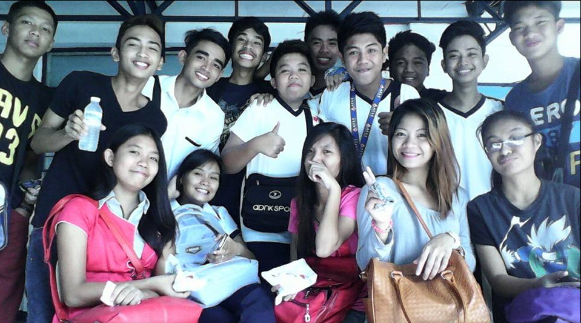We end our first semester with lot of memories and gladness because we passed all our subjects.
On my first day in second semester I felt nervous again, My classmates in IT is not the same classmates in second semester because CS studetns merge in other course that is the management students. They are nice, friendly and easy to get along with. We have an documentary about the multo (ghost), we need to interview the person who experience about the ghost and the reenactment of their experiences
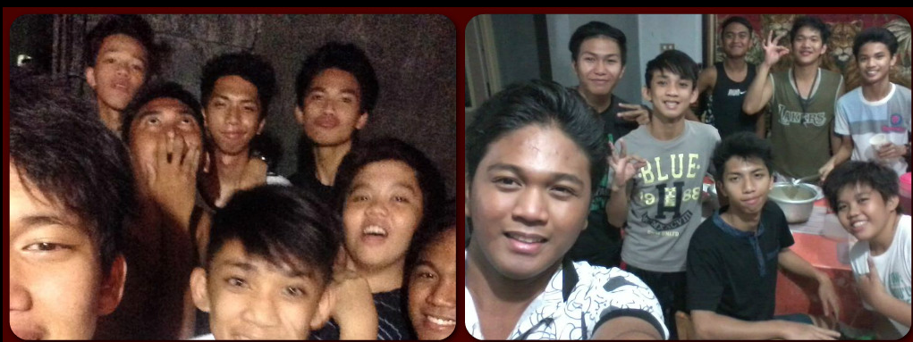For the creating of documentary we need to overnight for the reenactment of the story. On that night is happiest night, we scared each other laughing for the the mistake of doing the reenactment and one of the most memorable night. My teacher watch the documentary they also laughed of what they see about the acting and the props we used.
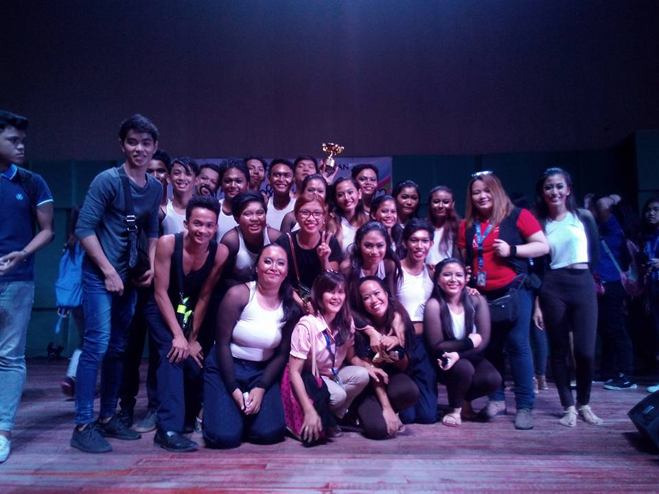One of the major competition in aclc is the speech choir competition. We won an 2nd place on that event. But before that we sacrifice our time because we need to pracice and spend big amount of money for the trainor fee, costumes and props. but all of it is worth it because we won on that competition. This competition give me to face my fear of shyness and get close to my classmates/friends.
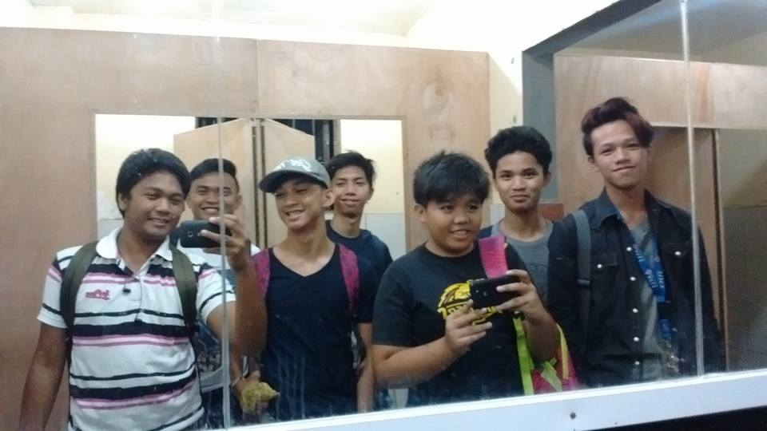 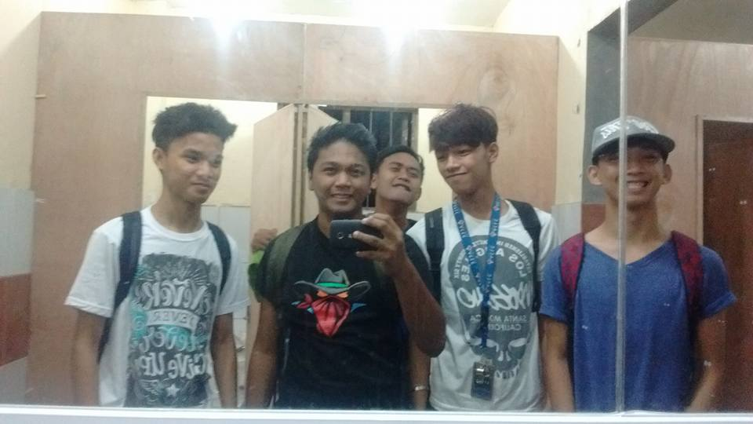Taking selfies in the comfort room of girls is the unforgetable moments. Before we go in, we make sure that no one's in there because we scared to slapped our face hahaha.
 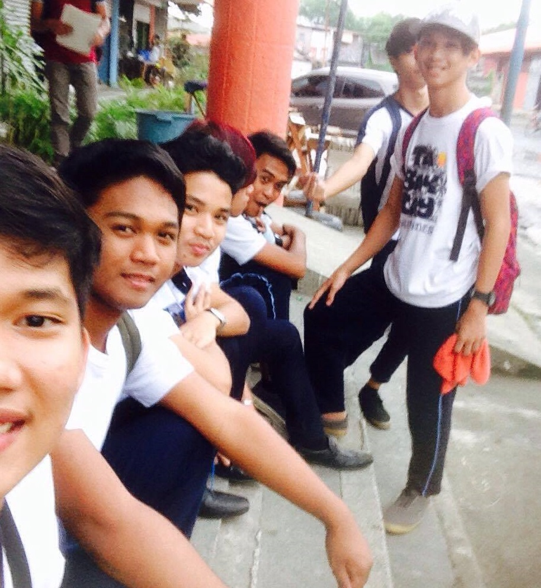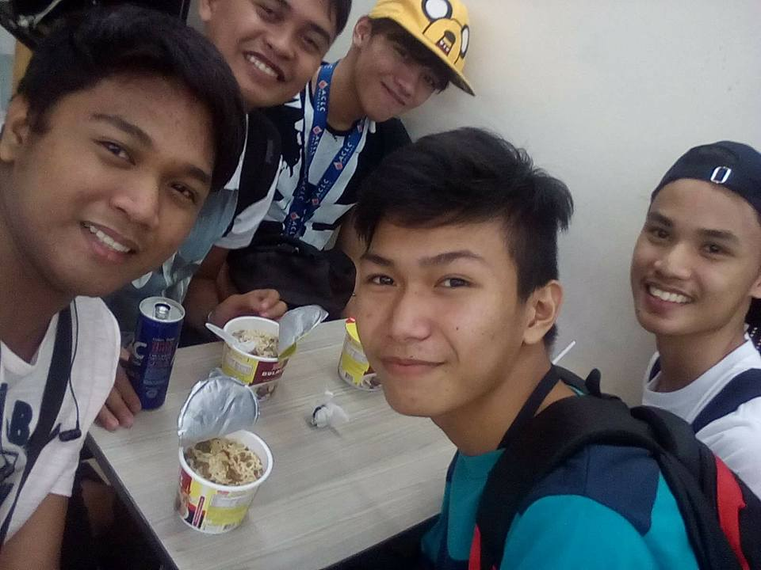 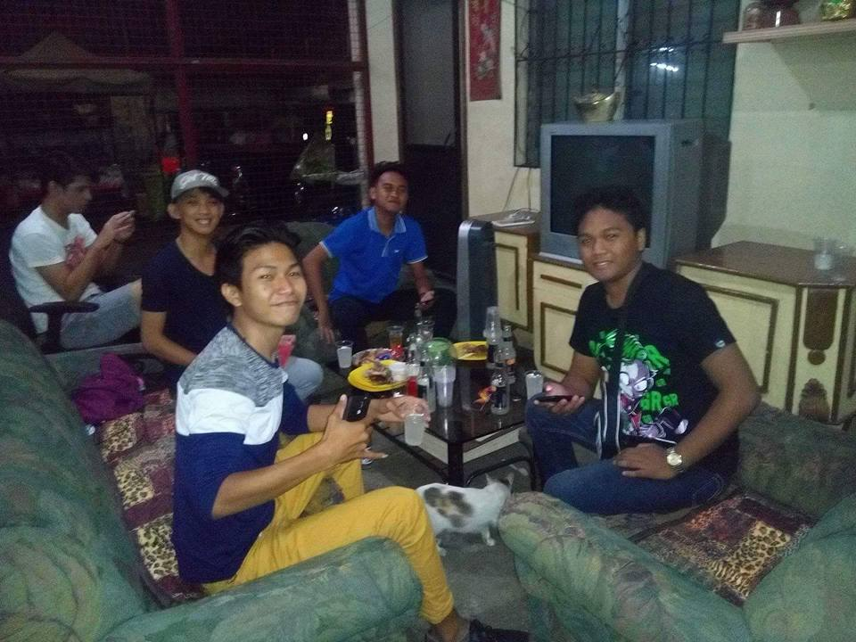
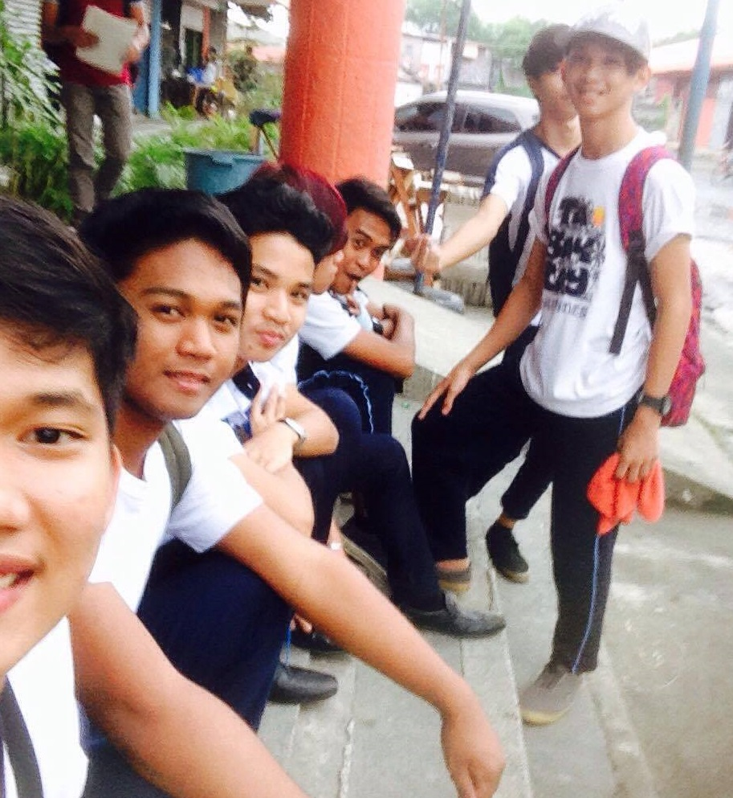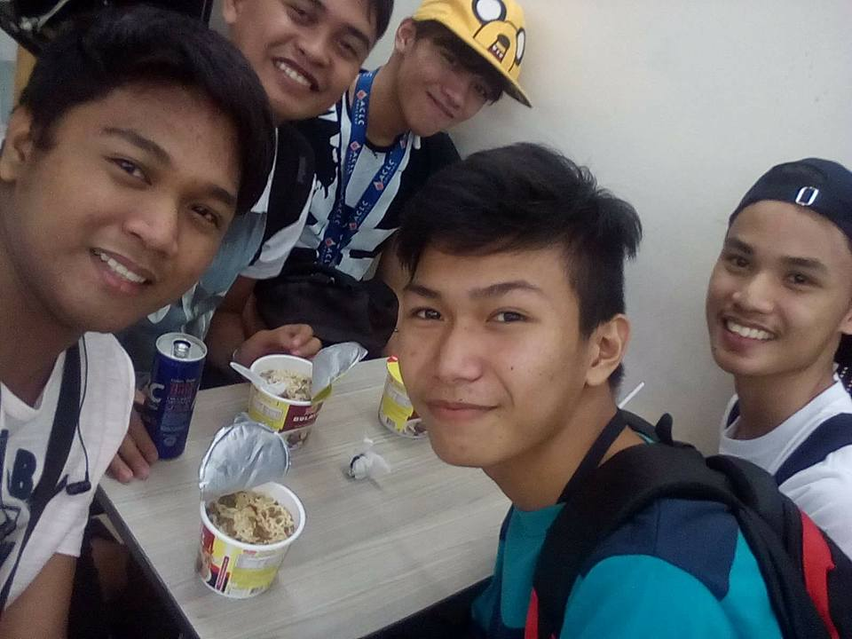 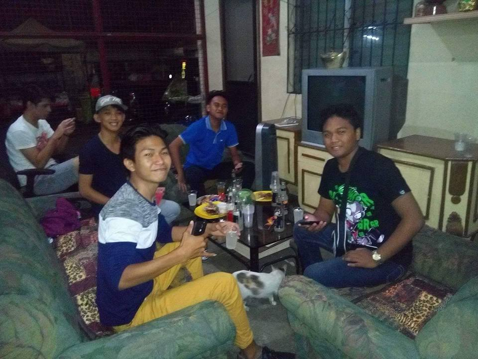
The strong bond of friendship is not always a balanced equation; friendship is not always about giving and taking in equal shares. Instead, friendship is grounded in a feeling that you know exactly who will be there for you when you need something, no matter what or when. Thanks to all my friends that gives me lot of memories and bondings in two years in ACLC.
Thank you for reading my blog, God bless.